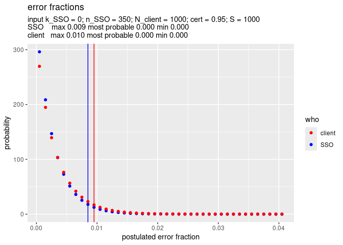

A shared Service Organisation, SSO, is an administrative entity that carries out financial transaction on behalf of a number of client organisations. The kind of transactions done by the SSO are the same for all clients.
The goal of ssoestimate is to estimate the monetary error rate of transactions for each single client of the SSO. This is done by using a sample from all the transactions of the SSO as a proxy. This assumes that the most efficient way to estimate this error rate is by means of sampling: it is not feasible to do for example an integral data-analyses of the transactions. The one big assumption that ssoestimate uses is that the set of transactions from the client is a random sample from all the transactions carried out by the SSO.
Using this assumption makes it possible to efficiently estimate the error rate for all the clients of the SSO. For example suppose that the SSO processed 100,000 transactions, for 10 clients. And suppose we want to establish with 95% confidence that the error rate for each client is at most 1%, then we could use (expecting no errors in the samples) a sample of 300 transactions from each client, totalling 3000 transactions. Instead when using ssoestimate it suffices to draw only 350 transactions in total to conclude with 95% confidence that the error rate of each client is at most 1%. See the example below.
A small paper about the algorithm used is forthcoming.
Installation
You can install the development version of ssoestimate like so:
install.packages("devtools")
devtools::install_github("cfjdoedens/ssoestimate")Example
This example shows that indeed 350 transactions (n_SSO = 350), which turn out to have no errors (k_SSO = 0), suffice to ascertain that a client which has 1000 transactions (N_client = 1000) has with 95% (cert = 0.95) certainty at most 1% errors (client max 0.010).
library(ssoestimate)
x <- SSO_estimate(k_SSO = 0, n_SSO = 350, N_client = 1000, S = 1000)
SSO_graph_plot(x, cert = 0.95, visual = TRUE)